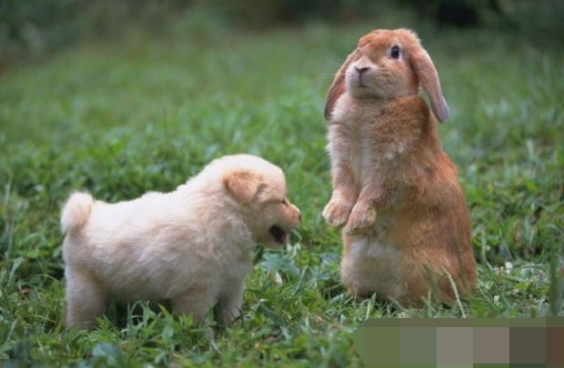

正确饲养用具可减少兔生病

白兔
用正确合适的用具来养兔兔，可以避免兔兔的很多问题。例如很多兔友用买兔兔送的笼子养兔兔，这是不合适的，因为这个笼子非常的狭窄，兔兔在里面很难受，再加上面对一个新的环境，很容易造成兔子应激死亡。很多兔友用狗用的水碗给兔兔喝水，这是及其错误的，因为兔兔的口腔结构决定来兔兔只能用滚珠水壶饮水，用水槽喝水会导致兔兔得湿性皮炎，下巴会发炎溃烂，即而导致败血症死亡。由于兔兔有磨牙的习惯，所以需要为兔兔准备一个磨牙石，供其磨牙，兔兔如果不磨牙会带来一系列的问题，兔兔的两颗门牙时持续生长的，如果没有东西磨牙，会造成门牙过长，导致口腔不能闭合，即而导致口腔溃疡，不能进食而死亡。很多兔友买的兔笼由于没有配备站板，所以兔兔长期站在铁丝网上，极易导致兔兔得脚皮炎。
兔兔的身体结构决定来兔兔两个后腿的关节处为全身最重的受力点，如果此处长期受到挤压，就会溃烂即而导致脚皮炎，脚皮炎时及其难以治愈的顽症，所以预防就显得极为重要。所以养兔兔必须准备以下的用具，兔兔才能健康的生长。一个能让兔兔很舒适且有一定活动空间的兔笼，里面一定配备一块站板，至少占笼内一半的面积。供兔兔休息用。一个足够容量的滚珠水壶，注意小兔兔要用小滚珠的水壶，大滚珠的兔兔舔不动。长期给兔兔准备一根磨牙石，供兔兔磨牙。一个可以固定在笼内的食盆。一个可以固定的草架。如果条件允许，可以再配一个兔兔用的厕所，可以培养兔兔定点大小便的好习惯。
垂耳兔
一、能抓住兔耳朵把它拎起来吗?
绝对不可以，兔兔的耳朵上布满了神经和血管还有脆骨，是非常脆弱的地方。如果你抓住兔兔的耳朵把兔兔拎起来，兔兔的耳朵很容易折断。如果你想把小兔兔移动到其他的地方，可以双手伸到兔兔身体下方后交叉，并用两侧的手掌固定住兔兔，把兔兔托起来移动到别的地方。如果你想把大兔兔抱起来移动到别的地方，可以用一只手拖住前爪腋窝下把兔兔抱起来，另一只手顺势拖住**，并使兔兔的后备靠紧你的胸部即可，有的兔兔不喜欢被人抱，所以第一次抱的时候，一定要小心，谨防摔伤。
二、能给它洗澡吗?
绝对不可以,由于你买的兔兔年龄太小,所以洗澡非常危险,由于兔兔本身就不耐洗澡,再加上幼兔的抵抗力很差,洗澡极易导致生病,甚至直接死亡.所以在兔兔4个月大之前,绝对不能洗澡.兔兔的自我清洁能力极强,所以只要你养兔 兔的环境干净,兔兔慢慢的就会把自己的毛清理的非常干净,身上也会散发着一股清香.只要正确饲养的兔兔,一辈子都不需要洗澡,且身上不会有任何的味道,兔兔身上的味道,全部来源于恶劣的饲养环境。
三、兔兔能不能喝水?
我可以负责任的告诉你,兔兔当然可以喝水,任何生命的维持都离不开水,所以必须给兔兔喝充足干净的纯净水或白开水,有些兔兔不喝水是因为吃了很多的蔬菜,过量的食入蔬菜可能会导致腹泻,而喝水不会导致腹泻,腹泻和喝水没有任何的关系.
饲养环境会影响兔兔呼吸系统

宠物兔
兔兔的呼吸系统很脆弱，对于饲养环境是有要求的，饲主要注意提供适合牠们身体健康的环境。
一、干燥，避免潮湿
兔子本身就是怕潮湿的动物，把兔兔饲养在潮湿的环境中，会引发很多疾病，耳炎、皮肤病、鼻炎...笼具、地板等清洗打扫，务必干透后再让兔兔去。家中潮湿的场所，应当是兔子活动的禁区。例如卫生间，有的朋友将兔兔养在卫生间，那真的不可取，卫生间是兔兔的禁区。
二、清洁
不清洁容易生病，这在人也是一样的。不清洁的环境对兔兔会引发很多疾病，消化系统、皮肤，当然还有呼吸道。勤打扫，定期消毒笼具，这些都是必要的预防措施。
三、少灰尘和粉尘
这点非常重要。灰尘和粉尘会**兔兔的呼吸系统，引发过敏。无论你的兔兔是过敏性鼻炎还是细菌性鼻炎，在治疗工作中都要注意灰尘和粉尘。